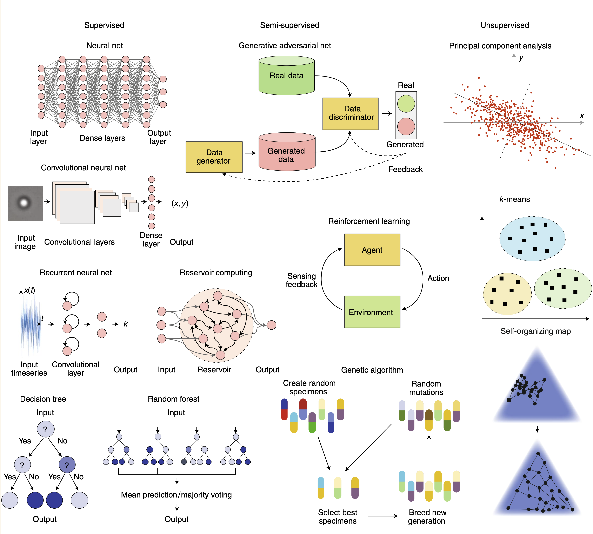

This page was generated from /Users/fci/Documents/GitHub/Deep Learning/source/notebooks/L1/0_introduction.ipynb.

Machine Learning and Neural Networks¶
One field, which is increasingly important also in physics is the field of machine learning. Machine learning is the summarizing term for a number of computational procedures to extract useful information from data. We would like to spend the rest of the course to introduce you into a tiny part of machine learning. We will do that in a way that you calculate as much as possible in pure Python without any additional packages.
Overview¶
Machine learning has its origins long time ago and many of the currently very popular approaches have been developed in the past century. Two things have been stimmulating the current hype of machine learning techniques. One is the computational power that is available already at the level of your smartphone. The second one is the availability of data. Machine learning is divided into different areas, which are denotes as
supervised learning: telling the system what is right or wrong
semi-supervised learning: having only sparse information on what is right or wrong
unsupervised learning: let the system figure out what is right or wrong
The graphics below gives a small summary. In our course, we cannot cover all methods. We will focus on Reinforcement Learning and Neural Networks just to show you, how things could look in Python.

Image taken from F. Cichos et al. Nature Machine Intelligence (2020).